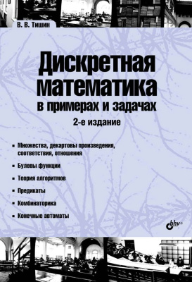

Дискретная математика в примерах и задачах (Тишин)
Популярный сборник задач по дискретной математике Тишина часто используется для домашних заданий студентов технических специальностей. Здесь приведены примеры решений заданий из этого сборника, которые помогут вам в самостоятельной работе.
Немного фактов
- Сборник основан на лекциях и практических занятиях автора.
- Последнее издание 2016 года содержит 336 страниц и множество задач.
- Каждое задание представлено в нескольких вариантах.
- Все задания снабжены примерами решений для самостоятельной работы.
Примеры задач
Задача 1. Пусть $A$, $B$ и $C$ — множества точек плоскости с условиями $\alpha$, $\beta$ и $\gamma$ соответственно. Изобразите в системе координат $xOy$ множество $D$, полученное по формуле $\delta$.
Задача 2. Дано соответствие $Г=(X,Y,G)$, где $X=\{a,b,c,d\}$, $Y=\{1,2,3,4\}$, $G=\{(a,3),(b,4),(c,3),(d,1)\}$. Изобразить соответствие в виде графа, определить его свойства, найти образ и прообраз заданных множеств.
Задача 3. Для отношения $Ф=(\{1,2,3,4,5\},G)$, где $G=\{(3,5),(4,2),(1,2)\}$, достроить его до различных типов отношений: эквивалентности, частичного и линейного порядка, строгого порядка.